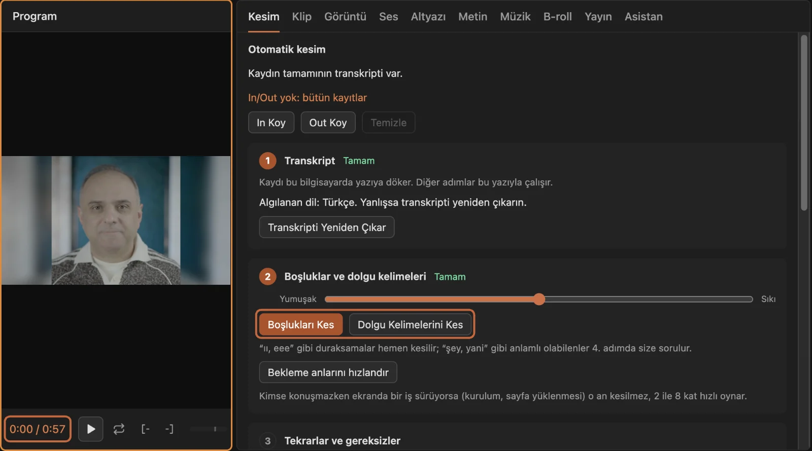

Kesim
Kesim sekmesi Otomatik kesim'dir: ham kayıttan derli toplu bir kayda dört adım. Her adım geri alınır; kendi kesimlerin ve seçtiğin denemeler kalır.

In ve Out
In ve Out yoksa her adım bütün kayıtlarda çalışır (In/Out yok: bütün kayıtlar). In Koy ve Out Koy ile ya da I ve O tuşlarıyla koyarsan düğmeler yalnızca aradaki bölümde çalışır: In/Out Aralığının Transkriptini Çıkar, In/Out Aralığındaki Boşlukları Kes gibi. Temizle onları kaldırır.
1 Transkript
Transkript Çıkar, söylenenleri bu bilgisayarda yazıya döker: hiçbir yere bir şey gönderilmez, hiçbir şey ödenmez. Diğer adımlar bu yazıyla çalışır. İlerleme satırı ne kadarının bittiğini ve yaklaşık ne kadar kaldığını gösterir; Durdur işi bitirir.
Uzun bir kayıt yavaş bir bilgisayarda biraz sürebilir. Daha hızlısını istersen Ayarlar › Yapay zeka › Transkript'ten sesi bir bulut hizmetine gönderebilirsin (Bulutta transkript). Kilnframe göndermeden önce sorar.
Bitince Algılanan dil dili söyler. Yanlışsa Transkripti Yeniden Çıkar'a bas.
2 Boşluklar ve dolgu kelimeleri
- Boşlukları Kes sessizlikleri keser. Kaydırıcı ne kadar sıkı kesileceğini ayarlar, Yumuşak'tan Sıkı'ya; kestikten sonra kaydırıcıyı hareket ettirirsen kesim de ona uyar.
- Dolgu Kelimelerini Kes, “ıı, eee” gibi duraksamaları hemen keser. “Şey, yani” gibi anlamlı olabilenler 4. adımda sana sorulur.
- Bekleme anlarını hızlandır, ekran kayıtları için: kimse konuşmazken ekranda bir iş sürüyorsa (kurulum, sayfa yüklenmesi) o an kesilmez, 2 ile 8 kat hızlı oynar.
Bu adım modelsiz, senin bilgisayarında çalışır.
3 Tekrarlar ve gereksizler
Tekrarları ve Gereksizleri Temizle, yapay zeka modeline yeniden söylediğin cümleleri, yarıda kalan başlangıçları ve izleyiciye olmayan konuşmaları buldurur. Emin olduklarını keser, gerisini 4. adıma bırakır. Bu adım için bağlı bir model gerekir (Kilnframe yapay zekayı nasıl kullanır).
4 Emin olunmayanlar ve denemeler
Modelin emin olamadığı kesimler burada listelenir, transkriptte ve Timeline'da turuncu görünür. Çevresini dinlemek için oynat düğmesine bas, sonra Kes ya da Kalsın de. Hepsini Kes ve Hepsi Kalsın hepsine birden karar verir.
Altta her tekrar grubu denemelerini gösterir. Kalan deneme çerçeveli; Bu Denemeyi Kullan başkasını tutar.

Benzer bölümler
Adımların altındaki Benzer Bölümleri Bul, aynı şeyi iki kez anlattığın yerleri modeline buldurur. Dinle, gerek olmayanı kes; hiçbir şey kendiliğinden kesilmez.
Hangisi nerede çalışır
| Adım | Çalıştığı yer |
|---|---|
| 1 Transkript | Bu bilgisayar (ya da seçersen bir bulut hizmeti) |
| 2 Boşluklar ve dolgu kelimeleri | Bu bilgisayar |
| 3 Tekrarlar ve gereksizler, Benzer bölümler | Yapay zeka modelin |
| 4 Emin olunmayanlar ve denemeler | Sen karar verirsin |